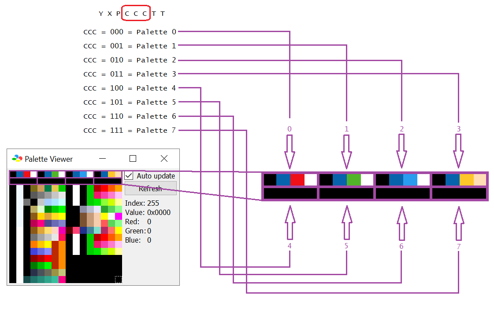
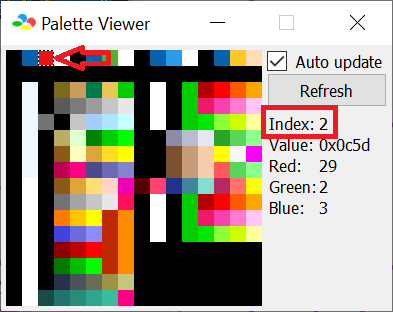

You probably be wondering, where does the CCC bits in YXPCCCTT point to what color in the palette editor? Well, the CCC refers to what groups of color
on the palette editor, numbered from 0-7 inclusive. On a 2BPP (2 bits per pixel) format (which the status bar graphic uses), each 8x8 tile possess 4 colors (with the first of the 4 being the
transparent).
Information is better displayed as visual than mere text:

How color data are stored
Each color (or each “square” on the palette editor) occupies 2 bytes, stored in 16-bit binary as [%0bbbbbgggggrrrrr] (r g and b means the red, green and blue colors,
each ranging from $00-$1F (%00000-%11111) inclusive, the higher the number of any of the 3 groups, the “brighter” towards the color, up to white when all 3 are maxed),
Therefore, each palette groups containing 4 colors occupies a total of 8 bytes. Remember, the SNES have multi-bytes stored as little-endian, meaning
[%0bbbbbgggggrrrrr] is stored as [gggrrrrr, 0bbbbbgg] in memory.
I've programmed a javascript below that makes it easier to find the RAM of a given color palette. Again, using Bsnes+, this time going to
debugger → S-PPU → Palette Viewer. Also again that the palette is loaded during processing the status bar, so a possible chance that the debugger won't show the status bar palette, so enable “Auto Update”
and go to the breakpoint editor (Debugger window → Tools → Breakpoint Editor) and “step” around address $0082A4.
When you select any color, thankfully, the debugger displays what color by “Index”. Use that number and CTRL+F to find it on the table here:

To edit the default palette, they are stored in smb3_status_pal.bin; data there are stored the same way how RAM stored the palette. Open that up with a hex editor to see and modify that. Most hex editors display the offset (an “address”
from the first byte), make use of that.